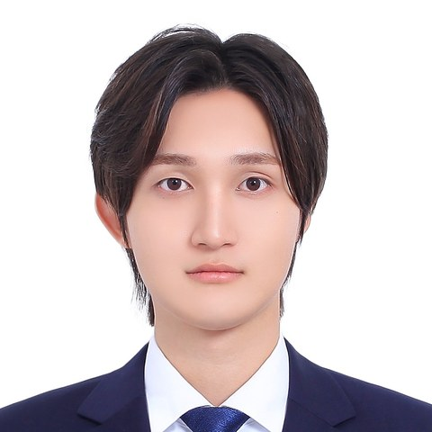

I am an M.S. student in the Department of AI Computing at KAIST, advised by Prof. Jun Han in the Sensing Intelligence and Cyber-Physical Security (CyPhy) Lab. I received my B.S. in Cyber Defense from Korea University in 2026.
My research interests lie in mmWave radar sensing, SAR imaging, and the security and privacy of cyber-physical systems. I am currently studying eavesdropping vulnerabilities of mmWave radar and building radar-based monitoring systems for healthcare.
Previously, I worked on document forensics and LLM-application forensics at the Digital Forensics Research Center, Korea University, with Prof. Jung-heum Park.
Last updated: September 2026 · Design based on Minimal Light.